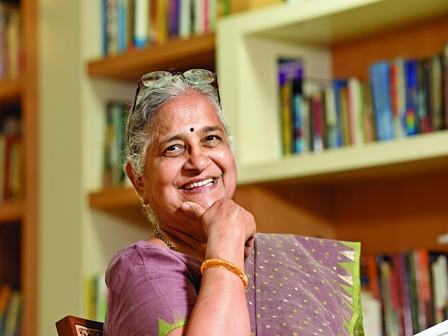

Sudha Murty (née Kulkarni; born 19 August 1951) is an Indian educator, author and philanthropist who is chairperson of the Infosys Foundation.
Sudha Murty was born into a Deshastha Madhva Brahmin family on 19 August 1951 in Shiggaon, Haveri in Karnataka, India, the daughter of R. H. Kulkarni, a surgeon, and his wife Vimala Kulkarni, a school teacher. She was raised by her parents and maternal grandparents. These childhood experiences form the historical basis for her first notable work entitled How I Taught My Grandmother to Read, Wise and Otherwise and Other Stories.[16] Murty completed a B.Eng. in Electrical and Electronics Engineering from the B.V.B. College of Engineering & Technology (now known as KLE Technological University),and then a M.Eng. in Computer Science from the Indian Institute of Science
| Name of the award | Year |
|---|---|
| Raja-Lakshmi award | 2004 |
| Padma shri | 2006 |
| Daana Chintamani Attimabbe Award | 2010 |
| Doctor of science | 2019 |
| Padma Bhushan | 2023 |